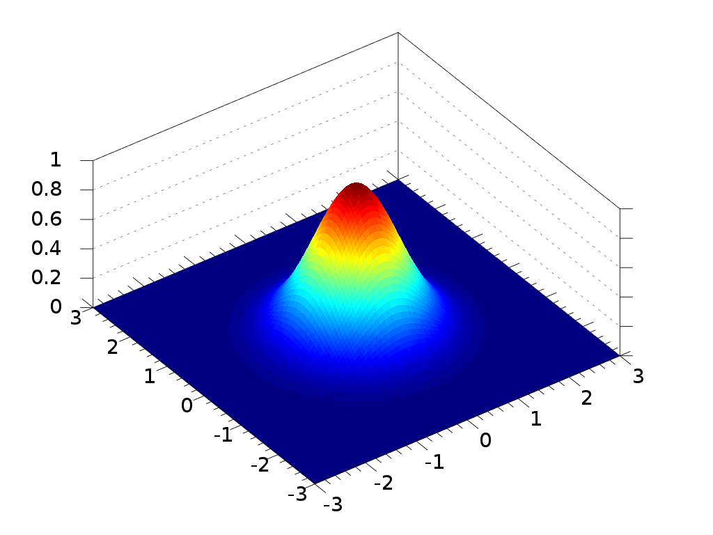

Perception
Edge Detection
Introduction
For many of us, it is easy to find both the objects in a picture and their boundaries. Humans are very good at identifying what something is and where it is given a clear line of vision, but what if we need to find the boundaries of objects in an impossibly large number photos? While we could put a room full of toddlers at work with markers and tell them to trace all the photos, we can do better in both performance and morals by making a computer do this task for us! In fact, in computer vision, this is a general problem known as edge detection. Formally, edge detection deals with determining the line segments that break up stark jumps in the brightness or intensity of pixels within a given image. One of the key benefits of doing edge detection is that it does away with much of the extraneous information provided by an image, giving back only the outlines of the objects.

A Naive Approach
So how do we approach detecting edges? One way is to simply run through all the pixels and, for each pixel, determine whether we see a large jump in intensity compared to its neighbors. While this approach goes in the right direction, one of its problems is that it is very susceptible to noise. Our current approach would count a single bright pixel in a sea of dark pixels as an edge which is undesirable.
Gaussian Smoothing
One way to reduce the noise in an image is to apply Gaussian smoothing. In this process, a Gaussian function, also known as normal distribution, is applied to an array of image intensities in a method known as a convolution.
Convolution can be thought of as a way of “blending” two functions. In our example, we can do a convolution by dragging a kernel or filter of the Gaussian function, a 2D array representation of the distribution, throughout the entire image. Each time the filter is applied to the image, all the intensities are multiplied with their corresponding values in the filter and the sum of these values is the result in the new image at the location of where the center of the filter was. Of note is that in a convolution, the filter is flipped both horizontally and vertically before being applied to the source image.
Below is a simple example of how a filter would operate. Change the values in the input filter and source and then move the filter with the control panel to see how the values change as the filter is applied in various locations on the source grid.